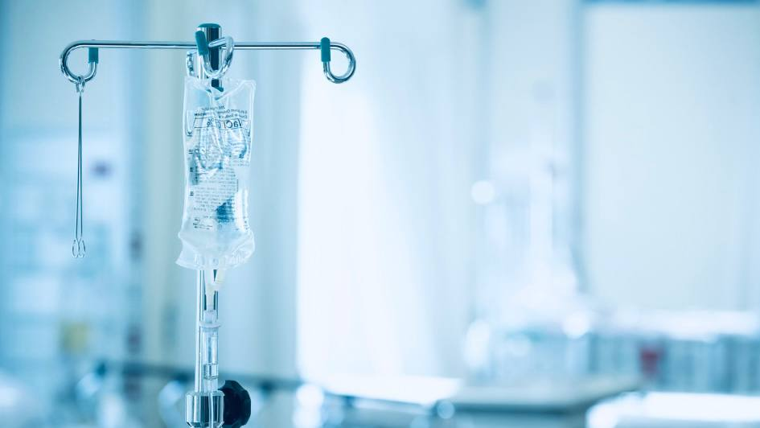

+380(97) 369 76
65
+380(97) 369 76
65Вывод из запоя - первый этап выздоровления
Мы можем остановить зависимость навсегда!
Работаем в Одессе, Киеве, Львове, Харькове, Днепре, Запорожье, Черноморске


Бесплатная консультация, работаем круглосуточно 24/7
Мы можем остановить зависимость навсегда!
Работаем в Одессе, Киеве, Львове, Харькове, Днепре, Запорожье, Черноморске
Вывод из запоя - это комплекс неотложных лечебных мероприятий направленный на вывод пациента из запойного состояния с помощью капельницы от алкоголя с последующим снятием патологической тяги к спиртным напиткам. Вывод из запоя всегда является достаточно серьезным и неотложным состоянием которое требует квалифицированной врачебной помощи с опытом работы в реанимации или неотложной скорой помощи. Пациенты находящиеся в запои всегда находятся в состоянии сильной хронической алкогольной интоксикации, в этом состоянии идет обострение всех хронических болезней по этому если выводом из запоя занимается неквалифицированный доктор или медсестра это может привести к серьезным последствиям для организма а иногда и летальному исходу.
Выведение из запоя - это один из самых важных этапов лечения алкоголизма , выведение из запоя требует срочной медицинской помощи и может поводиться в стационаре или на дому , что бы вывести из запоя безопасно - нужно пройти курс детоксикационной терапии с помощью капельницы от алкоголя а так же принимать последующее таблетированное лечение для полного восстановление и поддержания всех органов и систем которые находятся в состоянии длительной хронической интоксикации в следствии бесконтрольного приема алкоголя.
Капельница от алкоголя - это обобщенное название инфузионной терапии направленной на улучшение самочувствие больного и выведением его из запойного состояния, капельница от алкоголя - это самый эффективный метод снятия алкогольной интоксикации с помощью внутривенного введения лечебных детоксикационных препаратов, капельница от алкоголя широко используется врачами наркологами для лечения алкоголизма а так же при выведении из запоя на дому или в стационаре. Капельница от алкоголя имеет сильный детоксикационный эффект в состав которой входят кристаллоидные растворы , гепатопротекторы - гептрал, глутаргин, витамины группы В и С , а так же успокоительные и расслабляющие препараты для восстановления нервной системы.
Выход из запоя - это процесс при котором пациент самостоятельно или с помощью врача нарколога останавливает бесконтрольное прием алкоголя и не похмеляется. Выход из запоя на дому без медицинского контроля может быть опасен для здоровья зависимого и может вести за собой такие тяжелые наркологические заболевания как : белая горячка или алкогольный эпилептический припадок. Если ваш родственник бесконтрольно употребляет алкоголь и находится в состоянии длительного запоя , самый верный выход из запоя будет обратиться за наркологической помощью по номеру 050-021-69-57.
Что бы выйти из запоя вам нужно полностью отказаться от любого приема алкоголя, принять сорбенты по типу активированного угля и сорбекса, пить побольше щелочной воды к примеру поляну или боржоми. Соблюдение диеты и отсутствие жирной пищи необходимо в первые дни выхода из запойного состояния , так же стоит исключить кофе и крепкий черный чай они вызывают тяжелые тревожные состояния и могут негативно сказаться при выходе из запоя. Так же что бы выйти из запоя нужно обратиться к врачу наркологу и поставить капельницу от алкоголя на дому или в клинике - это самый быстрый и безопасный способ снятия алкогольной интоксикации а так же вывода из запоя. Что бы вызвать врача нарколога в Украине вам нужно позвонить по номеру 050-021-69-57
Что бы выйти из запоя на дому нужно отказаться от алкоголя , употреблять большое количество воды , принять сорбенты или вызвать нарколога для капельницы от алкоголя на дому. Что бы вызвать врача нарколога в Украине - позвоните по номеру 050-021-69-57.\
Стоимость выведения из запоя в Украине начинается от 1499 грн. Стоимость выхода из запоя на дому или в стационаре может меняться в зависимости от тяжести и срока употребления пациента.
Вывод из запоя на дому - самый распространенный метод выхода из запоя в случаи когда длительной самого запоя была незначительная а состояния пациента позволяет ему проходить лечение дома. Вывод из запоя на дому является серьезной медицинской манипуляцией проходящая в три этапа:
Выведение из запоя на дому является хорошей альтернативой клинике только в том в случаи если пациент находиться не в длительной запои , а так же общее состояние позволяет проводить инфузионную терапию дома.
Основными противопоказаниями к выводу из запоя на дому являются острые неврологические патологии по типу алкогольного делирия или алкогольного эпилептического приступа. Так же к серьезным противопоказаниям к выведению из запоя на дому являются такие патологии как :
Любой вывод из запоя на дому или в стационаре будет анонимным. Медицинские центры не разглашают данные о своих пациента и хранят врачебную тайну. Вы можете быть полностью спокойны за свою жизнь или жизнь ваших родных. Любой приезд домой врача нарколога происходит на обычной машине D сегмента , без опознавательных знаков и наклеек. Врач нарколог имеет при себя врачебную укладку нейтрального черного или серого цвета для сохранения полной анонимности больного.
Нарколог на дом может приехать в случаи когда больной не может добраться до стационара или состояние пациента позволяет проходить лечение на дому. Врач нарколог имеет при себе полную врачебную укладку для оказания любой наркологической и неотложной помощи. Медицинская служба UmbrellaPlus гарантирует безопасное и анонимное лечение для любого нашего пациента. Мы всегда работаем на свою репутацию. Что бы вызвать нарколога в Украине вам нужно позвонить по номеру 050-021-69-57.
Экстренный вывод из запоя - это комплекс сильной детоксикационной терапии для срочного снятия интоксикации и нормализации состояния больного. Экстренный вывод из запоя на дому или в стационаре проводит врач нарколог или реаниматолог. Экстренный выход из запоя необходим пациентам состояние которых резко ухудшилось или же тем кто уже длительное время находится в состоянии постоянной алкогольной интоксикации. Экстренное выведение из запоя это всегда серьезная манипуляции которая должна проводиться под наблюдением только самого квалифицированного врача, мы гарантируем плавное снятие алкогольной интоксикации при любой длительности и сложности запоя.
Запой всегда представляет состояние острой зависимости от спиртных напитков, человек находится в состоянии измененного сознания и не может перестать употреблять даже при наличии тяжелых хронических заболеваний. Любая попытка резко оборвать употребление приводит к тяжелой абстиненции и повторному опохмелению больного. Срочный вывод из запоя просто необходим пациента состояние которых резко ухудшилось и тем чье употребление принесло за собой тяжелые токсические последствия такие как многоразовая рвота , рвота желчу или кровью , эпилепсия и алкогольный делирий. Срочный вывод из запоя на дому или в стационаре включает медикаментозную детоксикационную терапию направленную на полное очищение организма а так же восстановление всех пораженных органов и систем.
Снятие алкогольной интоксикации является рутинным делом врачей наркологов , снятие алкогольной интоксикации происходит намного проще чем вывод из запоя и как правило встречается у пациентов не страдающих на алкогольную зависимость. Состояние алкогольной интоксикации всегда является острым патологическим состоянием которое требует определенного врачебного вмешательства.
Что бы снять алкогольную интоксикацию обычно ставят капельницу от алкоголя на дому или в стационаре она помогает полностью вывести все токсины за один сеанс а так же полностью восстанавливает организма.
Состав капельницы для снятия алкогольной интоксикации должен включать в себя такие препараты как:
Раствор Рингера или Хартмана.
Печеночные препараты гепа-мерц, гептрал.
Антиоксиданты - кокарбоксилаза и тиотриазолин.
Витамины группы В и С.
Противорвотные церукал, метоклопромид , ондасетрон.
Хорошим народным методом снятия алкогольной интоксикации является рассол, щелочная вода - поляна, боржоми, сорбенты - активированный уголь или сорбекс. Так же для снятие алкогольной интоксикации можно использовать аминокислоты как бетаргин или гепаргин, большое количество витамина С.
Помните что самолечение может быть малоэффективным а иногда и опасным для вашего здоровья. Если вы видите ухудшение состояния больного или то что примененное лечение не дало эффекта - обратитесь за наркологической помощью по номеру 050-021-69-57.
Для вывода из запоя народными средствами можно использовать такие советы как :
Полное исключение любого алкоголя.
Обильное питье щелочной водой.
Прием аминокислот и витамин группы В и С - бетаргин, тиамин ,аскорбиновая кислота.
Прием успокоительных на травяной основе - лучше всего это валерьянка и пустырник.
Запой - это тяжелое патологическое состояние которое требует обязательного медицинского контроля, если вы видите что вывести из запоя народными средствами не удается - обращайтесь за наркологической помощью по номеру 050-021-69-57. Запой может за собой нести возможные тяжелые патологические состояния а иногда и летальный исход. Мы категорически не рекомендуем заниматься самолечением когда есть возможность обратиться за любой медицинской помощью к любому врачу.
Анонимно

"Ну в хлопців просто золоті руки й світла голова, мене капали Олексій та Владислав, буквально за декілька сеансів я наче заново народився, до цього пив більше 3х тижнів, не міг зупинитись, дуже радий що знайшов саме цих спеціалістів, всім рекомендую"
Анонимно
"В течение нескольких лет я злоупотреблял алкоголь, что привело к увольнению с работы и вызвало у меня мысли о суициде. Понимая, что такой образ жизни неприемлем, я обратился за помощью в клинику "Амбрела". Здесь я смог преодолеть свою зависимость от спиртного благодаря заботливым и опытным врачам, а также эффективной системе лечения. Спустя более года я полностью избавился от желания употреблять алкоголь, и теперь моя жизнь вернулась в норму. Я даже не приближаюсь к спиртному! Благодарю врачей клиники "Амбрела" за их помощь и заботу."
Анонимно
"Я обращался за помощью в различные клиники, пытаясь избавиться от своей зависимости от алкоголя, но без особых успехов. Никак не мог справиться с желанием прибегнуть к бутылке, пока друг не посоветовал мне обратиться в центр "Амбрелла". Я записался на прием и был поражен заботливым отношением к пациентам. Уже прошло два года, и теперь я смотрю на алкоголь с абсолютной равнодушием, активно занимаюсь спортом и улучшил отношения в семье. Благодаря центру "Амбрелла" моя жизнь была спасена от алкогольной зависимости!"
Анонимно

"Хочу выразить свою благодарность врачам из центра алкоголизма "Амбрела" за то, что они буквально спасли мою жизнь. В течение последнего года я сильно увлекался питьем, и все это привело к катастрофическим последствиям. Хотя я ходил на терапевтические сеансы, но безрезультатно. Тогда я нашел адрес клиники "Амбрела" в интернете, изучил отзывы и информацию о центре, и записался на прием. Там мне сразу предложили методику лечения, которая помогла не только справиться с физической ломкой, но и психической зависимостью от алкоголя. Не буду распространяться, скажу только одно - после пребывания в этой клинике я стал другим человеком, и навсегда забыл, что такое привкус алкоголя. Больше меня не тянет на это! Я искренне верю, что в центре "Амбрела" трудятся настоящие целители душ!"
Анонимно
"После сложного развода мой сын начал подавлять свою обиду и горе употреблением алкоголя. Он старался скрывать это от меня, но я, как мать, почувствовала, что что-то не так. В конечном итоге, ситуация стала критической. Моя знакомая посоветовала мне обратиться в клинику "Амбрела". Я была приятно удивлена их работой! Они помогли сыну преодолеть очередной период злоупотребления алкоголем, и с тех пор прошел уже более года, и он совсем не пьет."
Анонимно
"Благодаря вашей помощи, моя семья была спасена. Я с трудом уговорила мужа начать лечение, и последний каплей был пьяное ДТП. К счастью, в аварии никто не пострадал, но это был для него сигнал к действию. Он наконец согласился пройти курс лечения на дому, в стационар не хотел ложиться. Лечение было трудным, и были моменты, когда срыв был настолько близок, но благодаря вашему центру Амбрелла мы справились с этим."
Анонимно
"Для меня эта клиника стала настоящим спасением! Долгое время я упорно отказывался от лечения, уверен был, что со мной все в порядке. Но к счастью, семья уговорила меня попробовать. И сегодня я чувствую себя невероятно счастливым, осознавая, что мне абсолютно не нужен алкоголь. Огромное спасибо за помощь и поддержку, которые я получил здесь! Я благодарен вам за новую возможность жить полноценной и счастливой жизнью!"
Анонимно
"Выражаю благодарность ребятам, которые оказали мне помощь и не отвернулись. Уже 10 месяцев я остаюсь чистой. Благодарю за то, что помогли найти новый путь в моей жизни."
Приезд в течении 60 минут от момента поступления заявки
Наши филиалы есть во всех больших городах Украины.
Мы оказываем профессиональную доказательную медицинскую помощь. Гарантией является наше имя.
Номер телефона:
+380 (97) 369 76 65
+380 (50) 021 69 57
Адрес главного офиса: г. Харьков ул. Сумская 47
Офис вашего города нужно
уточнить
Работаем в: Одессе, Киеве, Львове, Харькове, Днепре,
Запорожье
Telegram: t.me/umbrellaplus
График работы: Круглосуточно